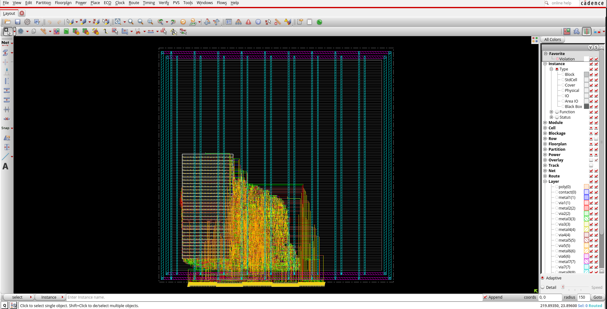
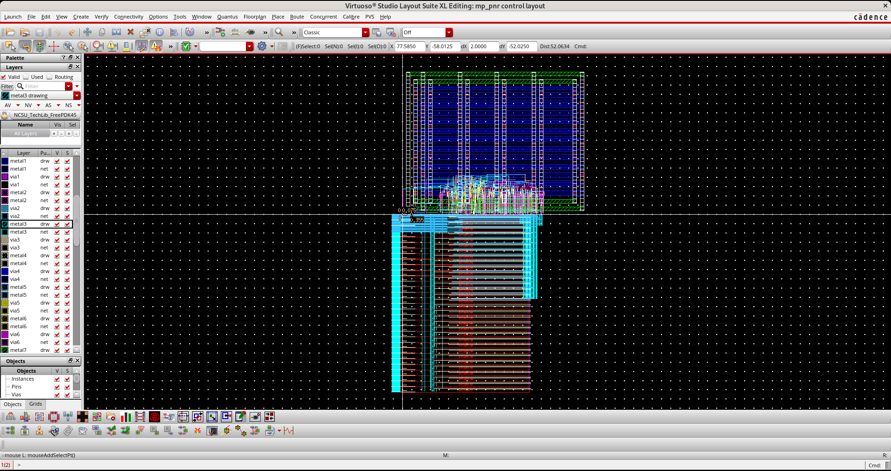
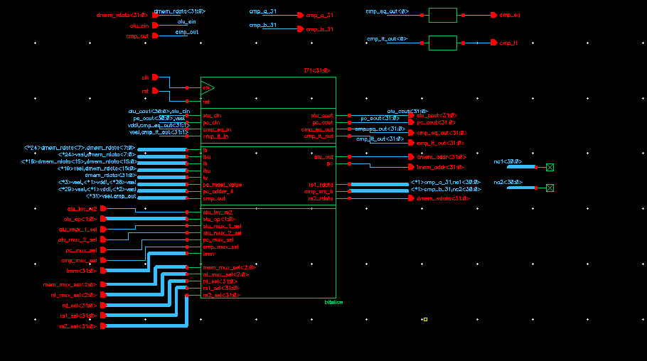

RISC-V CPU Physical Design Layout
Designed and physically implemented a single-cycle RISC-V processor using a full RTL-to-GDSII flow with Cadence Virtuoso and Innovus in FreePDK45.
Created transistor-level schematics and custom standard-cell layouts for datapath components including the ALU and register file. Performed DRC/LVS verification and optimized layouts for area and routing constraints.
Developed TCL automation scripts for synthesis, floorplanning, place-and-route, clock tree synthesis, and timing analysis, generating fully placed-and-routed CPU implementations in Cadence Innovus.



